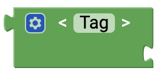

senseBox Web
Here you can find all the blocks you need to build a webserver using senseBox. For the webserver you need the WiFi-Bee.

Initialize HTTP server
Use this block in Setup() to initialize the HTTP server. The Port field allows you to specify the port the server should be accessible from in the browser. By default, port 80 is entered here.
When client is connected
This block is connected in an endless loop. In the free block section, insert the blocks to be executed when a client (e.g. a user via the browser) accesses the server.IP address
This block returns the IP address of your senseBox in the network.Method
This block gives you the method back.
URI
This block gives you the URI back.
User agent
This block returns the user agent of the client accessing the HTTP server.
Successful HTTP Response
With this block you can send an HTTP response to the client when it accesses the server. The answer is the HTML code that can be assembled from different blocks.404 error
This block can be sent as a possible HTTP response when a faulty page is called.
HTML
This is the basic building block for the HTML code. On the body you attach your HTML code, which describes the structure of the website.